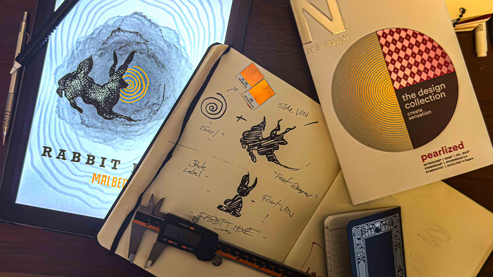
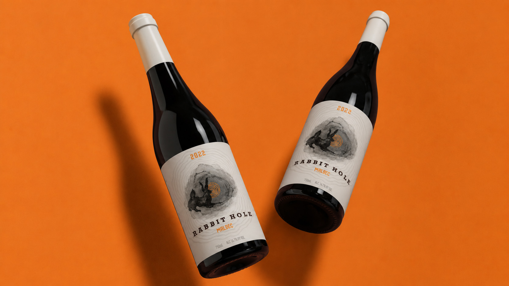
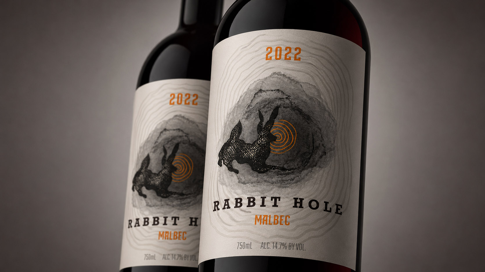
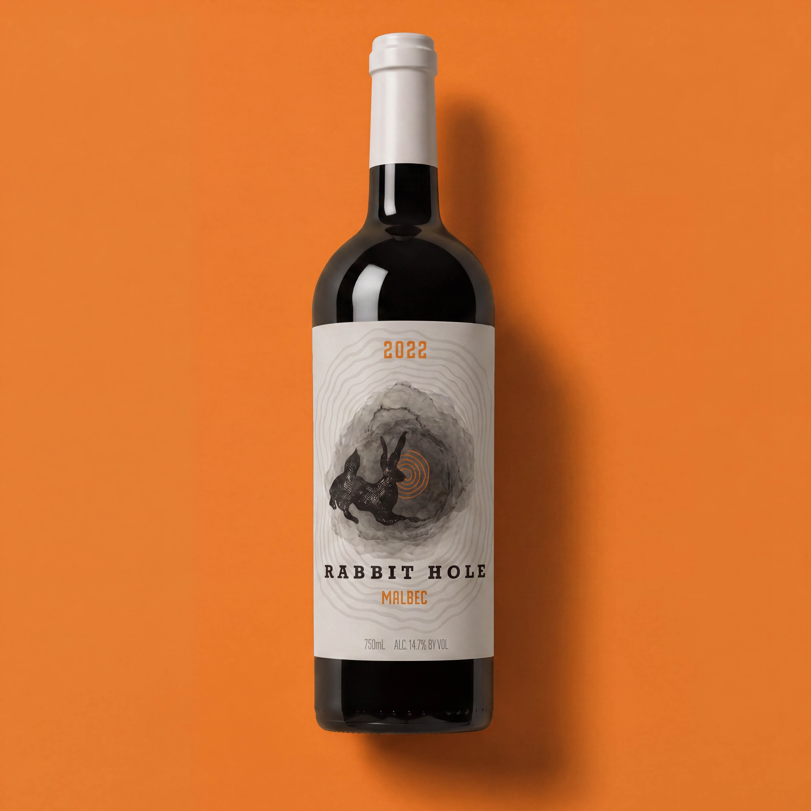

follow it all the way down
Rabbit Hole Wines was one of several wine brands developed under the Mellor Ranch umbrella, but unlike some of the more restrained identities in the collection, this one leaned heavily into illustration, atmosphere, and storytelling. The project never ultimately made it to market due to trademark complications, but it remains one of my favorite examples of following an idea as far as it could go.
Rabbit Hole was one of the sister brands developed alongside Haystack, Woollie, and several other labels within the Mellor Ranch portfolio. From the beginning, we knew this one was going to be different. Where Haystack leaned toward iconography and restraint, Rabbit Hole was always intended to be more artistic, more illustrative, and a little stranger.
As someone who loves drawing animals and building narratives through imagery, I was immediately excited. When I first heard the name Rabbit Hole, my mind instantly started racing with possibilities.
The obvious solution would’ve been to paint a beautiful rabbit and call it a day. That wasn’t interesting to me. Initially, I explored much more literal ideas, a rabbit physically falling down a rabbit hole, traveling down the bottle itself, almost turning the packaging into part of the story. Some of those early concepts were fun, but they felt too expected.
Eventually the challenge became: How do we create the feeling of curiosity rather than simply illustrate a rabbit? That shift in perspective changed everything.

At some point the perspective flipped. Literally. Instead of watching the rabbit disappear into the hole, we started seeing things from behind the rabbit. Now the rabbit wasn’t the subject, the rabbit became the viewer.
Suddenly we were looking over its shoulder into this mysterious, dreamlike space beyond. The illustration became less about a literal animal and more about curiosity itself. The rabbit felt entranced and we are right there with them.
I became much less interested in rendering a realistic rabbit and much more interested in capturing the essence of one. The atmosphere. The feeling. The invitation to explore something unknown. That’s where the project really came alive.
I was responsible for the creative direction, logo design, illustration, packaging design, label system, and overall visual identity. The rabbit illustration itself was entirely hand-created and became the centerpiece of the brand.
The goal was to build a cohesive visual world around that image and create something that felt distinctly different from the other labels in the Mellor Ranch family while still maintaining a level of sophistication appropriate for the wine industry.

Ironically, Rabbit Hole’s success wasn’t measured through sales. The brand never reached that stage. Partway through development, trademark issues emerged involving another alcohol company using the Rabbit Hole name. The project was ultimately shelved before launch.
In some ways, that’s what makes it interesting to me. It was a project that never got the opportunity to exist and explore the larger ideas we had in mind.
Most portfolio case studies end with a success story. This one doesn’t. And that’s exactly why I wanted to include it.
Creative work doesn’t always get judged by whether it reaches the market. Sometimes the most rewarding projects are the ones where you fully realize an idea, solve the problem, and create something you’re genuinely proud of, even if external circumstances prevent it from moving forward.
Looking back, Rabbit Hole feels appropriately named. We followed the idea all the way down, and even though it never reached store shelves, the journey was worth taking.

